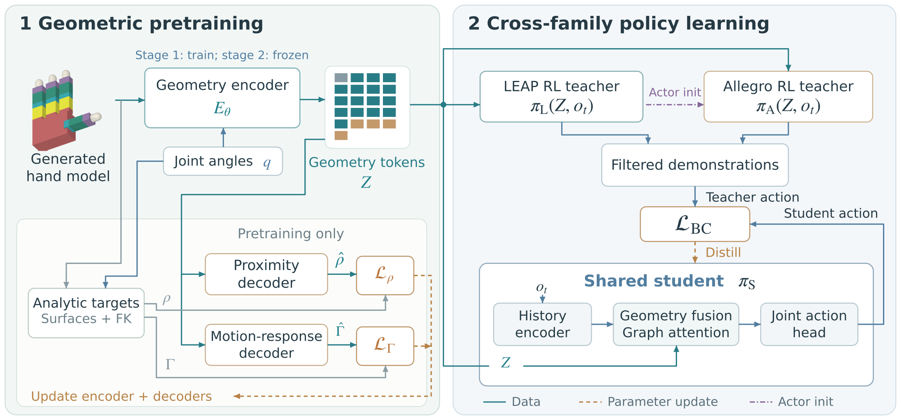
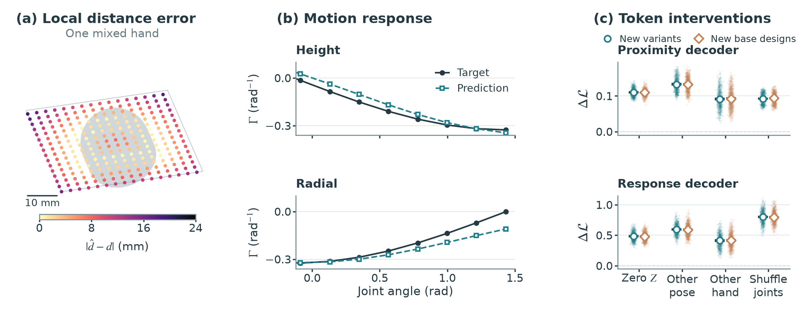
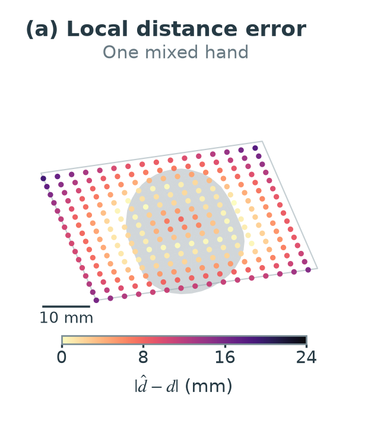
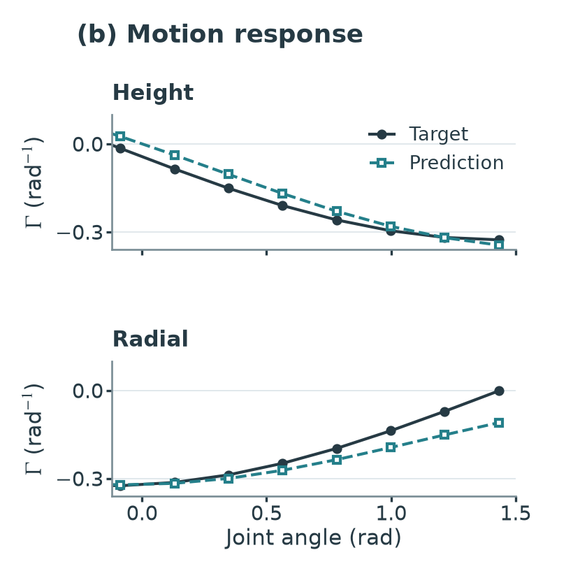
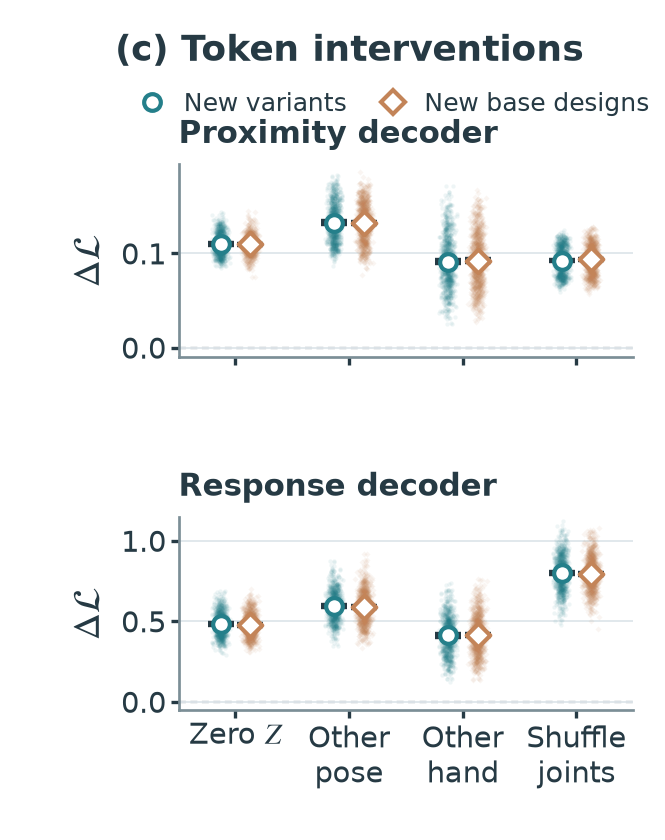

Geometry learning · Dexterous manipulation
AnyMani.
Cross-Embodiment In-Hand Rotation
via Contact Geometry Learning
School of Automation, Chongqing University
† Corresponding author
From hand geometry to a shared policy
Learn where contact surfaces lie—and how joints move them.

Abstract
In-hand rotation requires a policy to reorganize contacts while keeping an object stable. Sharing that policy across hands is difficult because morphology changes both joint kinematics and the surfaces those joints move. AnyMani generates controlled structural and geometric variations around LEAP-type and Allegro-type designs and learns a configuration-dependent geometric representation referenced to physical palm anchors. Pretraining predicts continuous surface proximity and the motion of fixed surface points under joint rotation. A single student learns from two family-specific teachers through offline behavior cloning, with the encoder frozen and no downstream reinforcement-learning fine-tuning.
Across three student training seeds, the shared policy achieves 57.6 ± 2.5% success on 128 held-out generated hands, compared with 41.1 ± 3.9% for the baseline without pretrained geometry tokens (No-Z) and 44.8 ± 3.9% for the FK auxiliary baseline. This simulated benchmark uses generated right hands from the two represented kinematic families, one cube, a fixed rotation axis, and prepared stable grasps.
Hand & Geometry Explorer
Hold the configuration fixed and change shape. Hold the shape fixed and move a joint.
Loading the hand explorer…
Surface geometry
Colors group the fingers. The highlighted point keeps its identity on the same surface component as joints move, while palm anchors provide a physical reference. Use “See inside palm” to inspect anchors within the palm solid.
Joint-driven motion
Moving a joint changes the selected point's position and its relation to the anchors. The explorer computes these analytic relations from the actual hand's URDF and forward kinematics; it does not display a predicted latent representation.
Cross-Hand Rotation
One frozen student. Different fingers, dimensions, and joint mechanisms.
These are selected first-trajectory recordings from a single Ours checkpoint, including a low-progress failure. The displayed replay and fixed 16-execution statistical evaluation are separate runs; selected clips do not estimate success rates.
What does the representation learn?
Surface proximity, joint-driven motion, and entity-level correspondence.




Shared control on held-out hands
| Representation | Success ↑ | Safe completion ↑ | Net turns ↑ |
|---|
Swipe horizontally to compare all metrics.
A matched BC comparison
All three conditions use the same teacher data and 16,750 optimization updates under the same frozen training routine. No-Z removes pretrained geometry tokens while retaining the common state and structural inputs. FK also removes those tokens and adds joint-origin prediction as an auxiliary training objective; this auxiliary head is discarded at deployment.
What success means
A hand passes if it reaches at least one median net turn, directionality ≥ 0.7, and safe completion in at least 12 of 16 deterministic 30-second executions. This evaluation uses a prepared grasp for each morphology and does not establish robustness to randomized disturbances or transfer to physical hardware.
Resources & citation
Explore the implementation and reproduce the shared student.
Cite this project
@misc{he2026anymani,
title = {AnyMani: Cross-Embodiment In-Hand Rotation
via Contact Geometry Learning},
author = {He, Aochen and Jing, Gangshan},
year = {2026},
url = {https://riemac.github.io/AnyMani/}
}